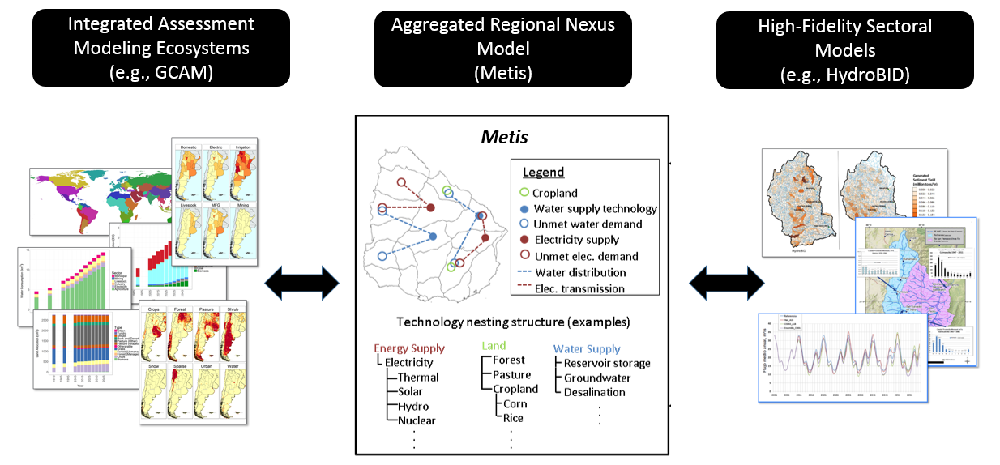

- Github: https://github.com/JGCRI/metis
- Webpage: https://jgcri.github.io/metis/
- Cheatsheet: https://github.com/JGCRI/metis/blob/master/metisCheatsheet.pdf
Introduction
Metis provides a framework allowing analysis of dynamics across multiple sectors including water, energy, land and socio-economics at various spatial and temporal scales. It is designed to be a flexible tool which can take inputs from both global integrated assessment models (IAMs) which capture global dynamics as well as more detailed models which can capture specific sub-regional and sectoral details at finer resolutions. Metis integrates across tools by sharing data in standardized formats.
In most projects looking at multi-sector dynamics one of the key constraints is data availability and a key goal of Metis is to overcome this barrier by providing users with default data across sectors for their specific region. The default data is built from outputs of the open-source Global Change Assessment Model (GCAM) eco-system which provides downscaled gridded global data for water, energy and land. Metis aggregates gridded data to any spatial boundary and offers users a first look at the water-energy-land situation in their regions of interest. The idea is to use this as a starting point and then improve the data as and when it becomes available while working with local stakeholders.
After aggregating data to relevant spatial and temporal scales, Metis finds relationships between the sectors using input/output methods to establish correlation matrices. The correlation matrices represent the inter-sectoral links throughout the system and are then used to investigate impacts of changes in one sector on others.
Metis - A model to bridge the gap between coarse resolution IAMs and finer-resolution sector specific models

Citation
Khan, Z., Wild, T., Vernon, C., Miller, A., Hejazi, M., Clarke, L., Miralles-Wilhelm, F., Castillo, R.M., Moreda, F., Bereslawski, J.L. and Suriano, M., 2020. Metis–A Tool to Harmonize and Analyze Multi-Sectoral Data and Linkages at Variable Spatial Scales. Journal of Open Research Software, 8(1).
Installation Guide
- Download and install:
- R (https://www.r-project.org/)
- R studio (https://www.rstudio.com/)
- Open R studio:
install.packages(“devtools”) devtools::install_github(“JGCRI/rgcam”) devtools::install_github(“JGCRI/metis”)
Additional steps for UBUNTU
sudo add-apt-repository ppa:ubuntugis/ppa
sudo apt-get update
sudo apt-get install libudunits2-dev libgdal-dev libgeos-dev libproj-dev libmagick++-devAdditional steps for MACOSX
brew install pkg-config
brew install gdal
brew install imagemagick@6Key Function Guides
Cheatsheet: https://github.com/JGCRI/metis/blob/master/metisCheatsheet.pdf
- metis.readgcam
- metis.mapsProcess
- colors, maps and params
- metis.chartsProcess (In progress…)
Publications
Khan, Z., Wild, T., Carrazzone, M.E.S., Gaudioso, R., Mascari, M.P., Bianchi, F., Weinstein, F., Pérez, F., Pérez, W., Miralles-Wilhelm, F. and Clarke, L., 2020. Integrated energy-water-land nexus planning to guide national policy: an example from Uruguay. Environmental Research Letters.
Khan, Z., Wild, T., Vernon, C., Miller, A., Hejazi, M., Clarke, L., Miralles-Wilhelm, F., Castillo, R.M., Moreda, F., Bereslawski, J.L. and Suriano, M., 2020. Metis–A Tool to Harmonize and Analyze Multi-Sectoral Data and Linkages at Variable Spatial Scales. Journal of Open Research Software, 8(1).